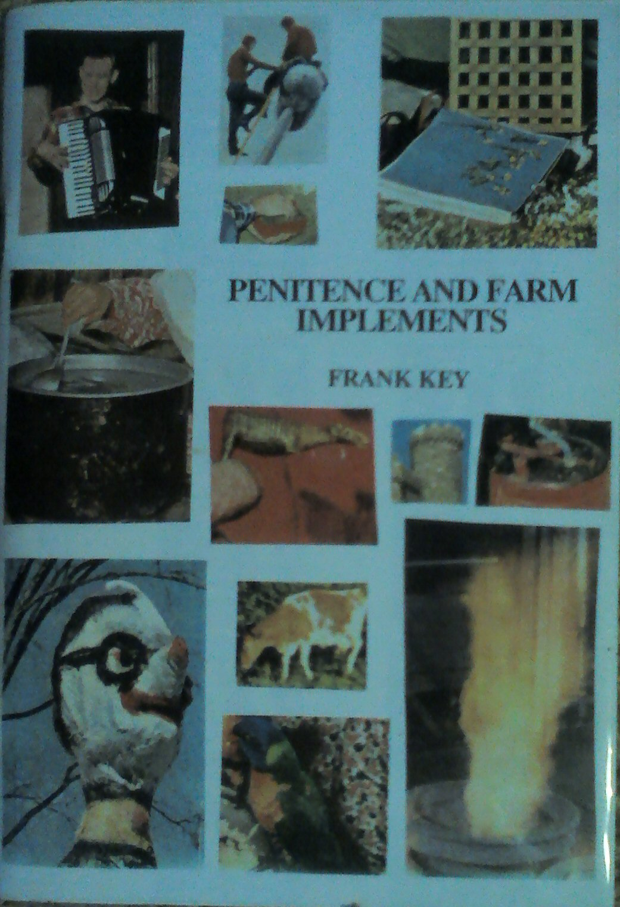
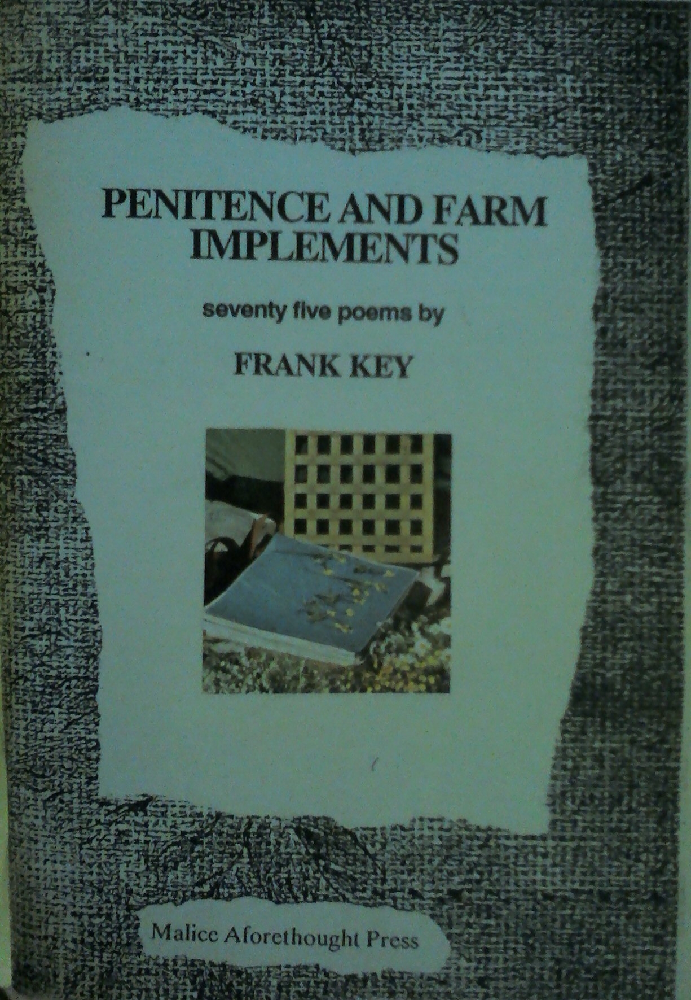

Tuesday, October the 21st, 2014
back to: title, date or indexes

Twenty-six years ago, the Malice Aforethought Press published Penitence And Farm Implements in an edition of twenty-six copies. Each copy was individually lettered from A to Z. The front and back covers contained twenty-six photographs, snipped out of (I think) old copies of National Geographic magazine. One of the original snippages was pasted in on the inside title page of each copy.
The preface—or “A Few Words Before The Drivel”—ran as follows:
The seventy-five pieces in this book were written between 1981 and 1987; they are arranged here in no particular order. Readers whose brains become frazzled by the often turgid nature of these poems may prefer to muck about with the illustrative matter; this consists of sheets of sticky labels inserted here and there within the book. Indeed, it is possible to ignore the texts completely and to spend hours of idle amusement rearranging the pictures in jigsaw-like fashion, or to remove the labels from the book entirely and use them as charming decorative accessories, guaranteed to brighten up the home, office, or slaughterhouse.
To which was appended a line from John Aubrey's Brief Lives:
“after his Booke came out, he fell mightily in his Practize, and 'twas beleeved by the vulgar that he was crack-brained”.
The “illustrative matter” consisted of further snippages from National Geographic, printed—in black and white—on to sheets of Gestetner sticky labels. Of the written content, the less said the better.
Penitence And Farm Implements is possibly the rarest of rare out of print pamphlets published by the Malice Aforethought Press during the last quarter of the last century. I would be interested to hear from any long-time Hooting Yard fanatics who actually own a copy. There can only be twenty-five of you in total.
